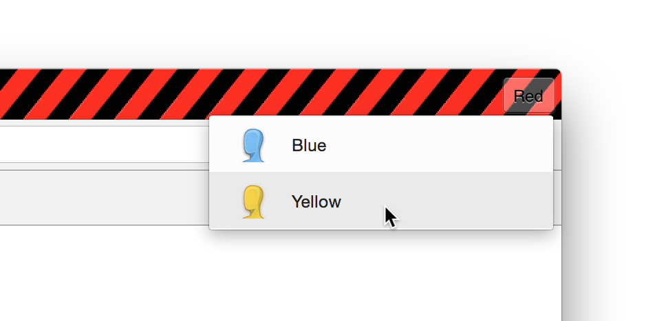

All traffic is sent to an HTTP proxy at localhost:8080.
To change this, rerun the installer with the --proxy-base option to select a different port, or edit the Chromium wrapper script to point at a different host / port.
Use multiple accounts at the same time! Right-click on the profile name in the top right corner to select a different one.
Each profile gets a completely separate cookie state. To get more profiles, run the installer with a list of profiles. Use --list-themes to list the available colors.
Click on the icon to clear your cookies or history.
Right-click on any page to open the Developer Tools and select the "Cookies" tab at the far right to view and edit cookies for a webpage.
Your user-agent is tagged with the current profile. Install the Burp extension to automatically mark individual requests in the proxy.